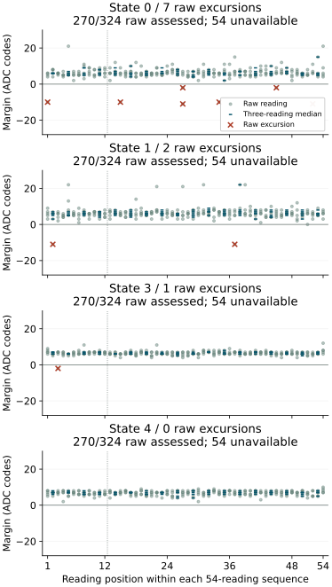
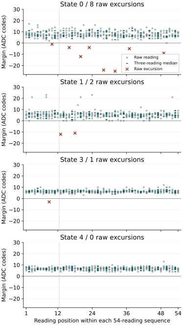

Question and rationale
The preceding run recognized 287/288 target medians. Its only target rejection appeared in readings 7–9, while both the first and final groups were correct. A high eleventh reading was retained in a correct final median. These observations provide no support for adding an initial wait and show that a correct median can conceal a constituent excursion.
This investigation asks whether excursions recur during longer acquisition at a fixed requested value, where they occur within each sequence, and how often the existing median decision remains correct despite an out-of-band constituent. It measures the circumstances of failure without selecting a new estimator or adjusting calibration to the returned observations.
Two-boot comparison
Complete median recognition did not recur. Boot 1 recognized 432/432 target medians. Boot 2 rejected its round-3 mixed-reference calibration, leaving 72 target medians unavailable; the other 360 were correct. Both boots recovered all 3888 readings with complete acquisition diagnostics.
| Measure | Boot 1 | Boot 2 |
|---|---|---|
| Accepted mixed calibrations | 6/6 | 5/6 |
| Correct target medians | 432/432 | 360/432 |
| Wrong / rejected medians | 0 / 0 | 0 / 0 |
| Unavailable medians | 0 | 72 |
| Raw readings inside | 1285/1296 | 1070/1296 |
| Raw excursions | 11 | 10 |
| Raw membership unavailable | 0 | 216 |
| Minimum accepted median margin | 0 codes | 2 codes |
The boot-2 margin and excursion count apply only where calibration was accepted. Its 216 unclassified raw readings were recorded successfully; their interval membership is unavailable because the reference was rejected. They cannot be counted as stable readings or excluded to claim complete success.
Boot 2 results
All five accepted mixed-reference rounds recognized 72/72 target medians. Each of the four targets supplied 90 correct and 18 unavailable medians; each median position supplied 20 correct and four unavailable decisions. Nominal-reference recognition of the same triples gave 351 correct and 81 rejected medians, with no wrong or unavailable outcomes.
Ten isolated held-out raw excursions occurred in four sequences, all during rounds 1 and 2. Seven involved state 0, two state 1 and one state 3. Each belonged to a different correct median. They extended from position 1 to position 52. The first twelve positions contained three excursions, 237 inside readings and 48 unavailable; positions 13–54 contained seven excursions, 833 inside and 168 unavailable. No adjacent held-out excursions were observed among the classified sequences.

Reference rejection in round 3
The state-0 mixed-reference triple at zero-based ordinals 1539–1541 was [2848, 2848, 2817], giving median 2848. Its requested value was 91, immediately after six readings at request 104. The final preceding triple was [3057, 3060, 3059]. The request/readback, paired ADC reads, status and timing checks passed for the high readings.
Across all twelve state-0 reference medians, the extrema were 2796–2848. State 1 spanned 2833–2872. Guard 2 produced intervals 2794–2850 and 2831–2874, with guarded gap −20. The native calibration returned overlap status 3 before gap expansion. The other neighbouring gaps were positive (14, 11, 13 and 12 codes). Even without the guard, these observed state-0/1 extrema overlap.
The existing whole-calibration rejection rule made all four held-out targets in that round unavailable. All 216 raw readings and all 72 calculated medians remain recorded. No reference was removed and no replacement calibration was inferred from held-out data.
All state-0 reference triples from the rejected calibration
| First ordinal | Request | Three raw readings | Median |
|---|---|---|---|
| 1515 | 91 | 2816, 2819, 2814 | 2816 |
| 1518 | 91 | 2817, 2818, 2815 | 2817 |
| 1527 | 90 | 2800, 2783, 2796 | 2796 |
| 1530 | 91 | 2817, 2815, 2816 | 2816 |
| 1539 | 91 | 2848, 2848, 2817 | 2848 |
| 1542 | 90 | 2798, 2798, 2797 | 2798 |
| 1548 | 91 | 2812, 2815, 2816 | 2815 |
| 1557 | 91 | 2820, 2816, 2817 | 2817 |
| 1560 | 90 | 2796, 2800, 2797 | 2797 |
| 1569 | 91 | 2816, 2813, 2817 | 2816 |
| 1572 | 91 | 2817, 2816, 2816 | 2816 |
| 1581 | 90 | 2783, 2798, 2798 | 2798 |
Two high constituents determined the reference median. This differs from the isolated held-out excursions tolerated by the median in both boots. Their occurrence after 104 → 91 identifies a testable transition association; the present record does not distinguish analog response, result retention or another source of the repeated codes. Conversion freshness remains independently unproven.
Boot 2 acquisition and SD integrity
Two read-only 64 MiB captures matched. Preparation identity 7D9330A147F4 matched the installed image. All 3888 readings were recovered from 32525 journal sectors, with 179 unused reservations. Acquisition diagnostics, all six block restorations, final restoration and pin release reported success. Final target restoration still lacks an independent final readback.
Acquisition-call intervals sum to 137.937 seconds. Trial entry to final-section entry took 1418.043 seconds (23 minutes 38 seconds), excluding completion of that final write. Sequence entry spans were 1.8566–1.8739 seconds. External powered duration was not separately measured.
MBR, primary and backup boot sectors, filesystem geometry and executable/configuration bytes matched the preparation. Both FAT copies agreed. Seven sectors outside the journal changed: LBA 32769, 32928, 33696, 34336 and 50718–50720; the parsed volume contains System Volume Information. The earlier boot-geometry corruption did not recur in either fixed-request return. Writer, timing and cause of the metadata changes remain unestablished.
Boot 1 results
All 432 target medians were recognized correctly by the frozen mixed-reference calibration. All six calibrations were accepted and acquisition integrity passed. The separate single-reading criterion failed: 11 of 1296 target readings were outside their requested-state intervals. There were no unavailable target readings or medians.
| State | Request | Correct medians | Raw inside | Raw below | Raw above |
|---|---|---|---|---|---|
| 0 | 91 | 108/108 | 316/324 | 0 | 8 |
| 1 | 92 | 108/108 | 322/324 | 2 | 0 |
| 3 | 100 | 108/108 | 323/324 | 0 | 1 |
| 4 | 101 | 108/108 | 324/324 | 0 | 0 |
Nominal-reference recognition of the same triples gave 331 correct, one wrong and 100 rejected medians. The mixed references resolved those 101 outcomes in this boot. This is a paired descriptive result on four perturbed targets; it does not establish general six-state reliability.
Raw excursions and median robustness
Eleven isolated out-of-band acquisitions occurred in eight of the 24 sequences. Each belonged to a different, correctly recognized three-reading median. None of the recorded excursions was adjacent to another. These are discrete acquisition counts, not measured physical pulse durations.
The first twelve positions contained two excursions among 288 readings and 96/96 correct medians. Positions 13–54 contained nine excursions among 1008 readings and 336/336 correct medians. Excursions occurred from position 9 through position 49. They were therefore not confined to the initial response. Unequal exposure and the non-randomized sequence prevent a causal comparison of early and late positions.
Rounds 1–6 contained 5, 2, 2, 1, 1 and 0 excursions respectively, each among 216 held-out readings. Every round recognized 72/72 medians; every median position recognized 24/24. This ordering does not isolate warming, reference renewal or any other cause.

One correct median had zero margin. In round 2, state 1, positions 13–15 gave [2815, 2834, 2827]. The median 2827 equalled the frozen lower bound 2827; the raw 2815 lay twelve codes below it. Passing median recognition therefore coexists with a narrow operating margin.
All eleven raw excursions
| Round | State | Position | Raw | Frozen interval | Margin | Triple median |
|---|---|---|---|---|---|---|
| 1 | 0 | 16 | 2824 | 2787–2820 | -4 | 2816 |
| 1 | 0 | 20 | 2832 | 2787–2820 | -12 | 2814 |
| 1 | 0 | 23 | 2824 | 2787–2820 | -4 | 2812 |
| 1 | 1 | 18 | 2815 | 2826–2872 | -11 | 2827 |
| 1 | 3 | 9 | 2992 | 2938–2989 | -3 | 2984 |
| 2 | 1 | 13 | 2815 | 2827–2877 | -12 | 2827 |
| 2 | 0 | 28 | 2848 | 2788–2824 | -24 | 2813 |
| 3 | 0 | 10 | 2824 | 2786–2823 | -1 | 2818 |
| 3 | 0 | 32 | 2848 | 2786–2823 | -25 | 2817 |
| 4 | 0 | 37 | 2832 | 2789–2827 | -5 | 2816 |
| 5 | 0 | 49 | 2832 | 2792–2823 | -9 | 2817 |
Acquisition and SD integrity
Two independent read-only captures of the first 64 MiB matched byte-for-byte. The returned preparation identity matched 6E31A05EC46F. All 3888 readings were recovered from 32525 journal sectors, with 179 reservations unused. Request/readback, paired ADC results, status and timing checks passed. All six block restorations, final restoration and pin release reported success. The final report does not independently read back the restored target value.
The counter intervals sum to 137.654 seconds for acquisition calls; trial entry to final-section entry was 1418.005 seconds (23 minutes 38 seconds). This latter interval includes journal work but excludes completion of the final-section write. A 54-reading sequence spanned 1.8565–1.8584 seconds between its first and final acquisition entries. External powered duration was not separately measured.
The returned MBR, primary and backup boot sectors, filesystem geometry and both executable/configuration files matched the preparation. Both FAT copies agreed and the volume passed the reader’s structural checks. Seven sectors outside the journal changed: LBA 32769, 32873, 33641, 34336 and 43682–43684, covering allocation information and a System Volume Information directory with its associated data. The previously observed damaged boot geometry did not recur in this capture.
The two matching reads establish capture consistency. They do not identify when or by whom the metadata was changed, prove that the card or reader is fault-free, or establish the cause of the preceding corruption.
Implications and next question
Both boots show that isolated held-out excursions can coexist with correct three-reading medians. Boot 2 also records two consecutive high reference readings that set an overlapping median and disable the entire calibration. Complete recognition therefore depends on reference acquisition as well as held-out recognition. The two-boot recurrence criterion and the separate single-reading criterion are not met.
The next proposed investigation is a controlled comparison of request 104 → 91 with 92 → 91 and continued 91 → 91 acquisition. Longer recorded bursts, balanced transition order and the unchanged three-reading baseline would test whether repeated high codes depend on the preceding request or recur during continued acquisition. Zero added wait remains the reference. Every raw reading, status transition and median must remain available; widening bands or removing the observed reference triple would conceal the failure instead of testing its origin.
The earlier boundary-response protocol used nominal predecessors, including 105; it did not isolate this perturbed 104 → 91 transition. A new comparison would supply that missing control. Any later reference-confirmation or longer-group rule needs a declared prospective comparison. Repeated codes and ordered status records alone still do not independently identify distinct physical conversions.
Acquisition sequence
Each of six rounds retains 216 nominal-reference readings followed by 216 interleaved mixed-reference readings. Both native calibrations are frozen before 216 held-out readings. Mixed references retain twelve medians per state, inward perturbations at the outer states and the existing gap rule with guard 2.
The held-out block contains four sequences of 54 consecutive triggered readings, at requests 91, 92, 100 and 101 for states 0, 1, 3 and 4. Target index is (position + round) modulo four. Each target therefore supplies six sequences, 324 raw readings and 108 non-overlapping three-reading medians. The complete boot contains 24 sequences, 1296 held-out readings, 432 target medians and 3888 readings including references.
The same requested control value is reissued before every reading. The existing 1 ms pre-ADC settling is retained, with zero additional wait. This is fixed-request acquisition, not a single electrical write followed by an untouched analog hold. There are no trigger-omission controls or dedicated predecessor sequences in this run; the actual preceding request is retained in assessment.
Declared assessment
- Acquisition integrity: preparation identity, ordered journal checksums, all 3888 readings, request/readback agreement, recorded ADC status and timing order, six completed restorations, final restoration and pin release. Missing or invalid observations prevent qualification.
- Complete median recognition: all six mixed calibrations accepted and all 432 target medians correct. Report correct, wrong, rejected and unavailable outcomes separately, including nominal-reference decisions on the same triples.
- Raw interval membership: assess every held-out reading against its requested-state frozen mixed-reference interval. Record inside, below, above or unavailable, signed distance to the nearest boundary, and elapsed counter time from sequence entry. All 1296 readings must be inside for the separate single-reading criterion. This is a PC assessment of the recorded native intervals, not an additional classifier executing on the Pi.
- Excursion structure: preserve all 54 raw readings and eighteen medians per sequence; report every consecutive run of out-of-band observations and every correct median containing at least one excursion. Separate all four targets, six rounds and eighteen median positions. Each median position retains 24 scheduled decisions.
- Unavailable data: rejected calibrations, diagnostic failures and missing readings remain in scheduled denominators. Retain their raw values when recorded. No trimming, recalibration using held-out data, retrospective window selection or substitution of unavailable outcomes with success.
The first four median groups cover the prior twelve-reading length; the other fourteen extend observation. Their unequal exposure is explicit: 96 versus 336 decisions over the boot. Counts and denominators must be reported together. They are descriptive within-sequence strata, not independent randomized trials.
Interpretation and limits
Later excursions would support continued variability under the repeated-request procedure. Correct medians containing excursions would show the precise scope of median robustness. Excursions confined to initial readings would support a position association in this run. An absence of excursions would establish only their absence in these finite sequences; it would not prove an invariant band.
Neither result isolates PMIC response, analog noise, other component activity or ADC conversion behavior. Trigger/status transitions, repeated codes and counter order do not independently prove a fresh physical conversion. Reference age, preceding target, round history and temperature are not randomized or independently measured. Four perturbed targets do not establish general six-state reliability.
Execution and recording
SEIGRASM selector 4 adds sixteen literal AArch64 instructions and redirects one dispatch branch. The operation contains 324 words. Selector-1 reference collection, electrical acquisition, calibration, recognition, restoration and journal instructions retain their existing execution paths. Schema 18 identifies the fixed-request schedule.
The path remains EEPROM entry → SEIGRASM apparatus checks → direct component acquisition → native calibration and recognition → senary SD journal. PC packaging places authored instruction words without a foreign target compiler or assembler. The inherited loader and initial hardware state remain dependencies. Firmware replacement and Hyphos-defined Seigsit creation are not established by this experiment.
The assessment reproduces the schedule and checks recorded decisions against the frozen native references. Execution tests cover all dispatches, late multi-reading excursions, an isolated excursion hidden by a correct median, rejected-calibration denominators, altered decisions and partial-record recovery with restoration. Supplied device responses validate the implementation paths, not physical results.
SD transport control
The preceding capture has damaged boot metadata while its journal and known executable extents remain intact. Before replacement, two new read-only captures matched that archived return exactly.
The first installation attempt then failed its complete-image readback while the volume was locked. Two subsequent read-only captures agreed. Compared with the prepared image, 33742 sectors differed. All 1024 successive 64 KiB blocks began with the byte prefix 55 53 42 43 (USBC); within every block, the prepared first 65024 bytes appeared displaced by 512 bytes. The initial verification buffer was not retained; these findings describe the subsequently preserved matching captures.
A retry using 16 KiB writes with immediate chunk verification failed at the first byte of its first chunk. That chunk, its failure record and two matching full captures were preserved. Windows then reported a successful restart of the identified USB card reader. Only that reader was restarted; the same prepared image and bounded write procedure were retained for the subsequent attempt.
These installation failures occurred on the PC before any Pi boot of this preparation. They establish corruption in that transfer path, but do not identify the responsible hardware or software, or the origin of the preceding experiment’s metadata damage. The subsequent attempt verified all 4096 chunks, followed by two matching complete-image readbacks and successful ejection. This is an observed recovery after restart, not proof that restart alone caused it or that recurrence is excluded.
Installation replaces the first 64 MiB only after the selected card’s identity and current-region hash match preserved evidence. It locks and dismounts the volume, flushes and verifies each 16 KiB chunk, then verifies the entire image through two independently reopened reads. It requests media ejection before releasing the volume; ejection support is device-dependent and its result is recorded separately.
On return, compare the complete boot metadata and known file extents with the preparation, independently of journal assessment. Preserve all differences and both read hashes. Host access before capture and device activity remain uncontrolled intervals; successful readback or ejection cannot establish the earlier corruption’s cause.
Boot 2: recurrence
This repeat tests whether complete median recognition recurs after a new boot under the unchanged protocol. Boot 1 recognized 432/432 target medians while retaining eleven raw excursions and one zero-margin acceptance. Report each boot separately: accepted calibrations, diagnostic integrity, correct/wrong/rejected/unavailable medians, raw interval membership, minimum margin, and excursion counts by target, round and position.
The recurrence criterion requires all six mixed calibrations and all 432 target medians to pass with acquisition integrity in both boots. Single-reading membership remains a separate criterion; its failure in boot 1 is retained regardless of the repeat outcome. No reference, guard, estimator, window or added wait changes are introduced.
Preparation 7D9330A147F4 retains all 34 instruction regions and the same acquisition parameters and boot configuration. The earlier 301-test validation is reused after verifying all 113 validated source hashes. The payload changes only its run identity header; 32704 empty journal reservations carry that new identity. The prescribed duration remains 26 minutes. Boot 2 is complete; its rejected round-3 calibration prevents the recurrence criterion.
The installed image passed all 4096 chunk checks and two complete readbacks; media ejection succeeded. The first-run capture matched the installer’s pre-write backup exactly.
Preparation
Preparation 6E31A05EC46F was installed and verified before this run. All 301 software checks passed without skips or source changes during validation; 113 validated source files are preserved. Comparison with the preceding image confirms 33 unchanged instruction regions, unchanged electrical parameters, boot configuration and journal extent. The reference operation changes one dispatch instruction and adds sixteen words.
The image contains 32704 empty journal reservations bound to this preparation. Installation verified all 4096 writes of 16 KiB, followed by two matching full 64 MiB readbacks with SHA-256 fb1745a6b6ab0e4a8df20f383d7ace7157ed18ec4e57aa837ca0e81189c8ad96. Media ejection succeeded. The returned assessment meets complete median recognition; single-reading membership does not meet its separate criterion.
Run duration
The protocol specified one uninterrupted 26-minute powered session under the established SD procedure. Reading count and journal extent are unchanged from the preceding run, whose final-section entry occurred after approximately 23 minutes 39 seconds. The returned counter intervals are reported under acquisition integrity; the external duration was not separately measured.
Evidence
Boot 2 and the two-boot comparison passed eleven assessment checks, including reconstruction of both captures, retained unavailable denominators, the exact reference doublet and rejection of duplicate or changed-protocol comparisons.
The fixed protocol, validated sources, complete image, installation record and transfer-failure captures are preserved before the Pi run. The returned image, both read hashes, full assessments and analysis sources are preserved separately. Twenty-four return checks passed, including exact reconstruction, excursion retention, invalid-reading denominators and rejection of corrupt or incomplete journals.